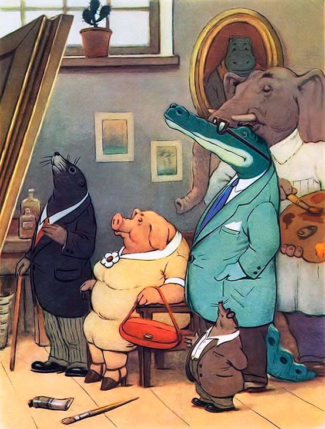

Слон-живописец

Слон-живописец написал пейзаж,
Но раньше, чем послать его на вернисаж,
Он пригласил друзей взглянуть на полотно:
Что, если вдруг не удалось оно?
Вниманием гостей художник наш польщен!
Какую критику сейчас услышит он?
Не будет ли жесток звериный суд?
Низвергнут? Или вознесут?
Ценители пришли. Картину Слон открыл,
Кто дальше встал, кто подошел поближе.
«Ну, что же, — начал Крокодил, —
Пейзаж хорош! Но Нила я не вижу…»
«Что Нила нет, в том нет большой беды! —
Сказал Тюлень. — Но где снега? Где льды?»
«Позвольте! — удивился Крот. —
Есть кое-что важней, чем лед!
Забыл художник огород».
«Хрю-хрю, — заметила Свинья, —
Картина удалась, друзья!
Но с точки зренья нас, Свиней,
Должны быть желуди на ней».
Все пожеланья принял Слон.
Опять за краски взялся он
И всем друзьям по мере сил
Слоновьей кистью угодил,
Изобразив снега, и лед,
И Нил, и дуб, и огород,
И даже мед!
(На случай, если вдруг Медведь
Придет картину посмотреть…)
Картина у Слона готова,
Друзей созвал художник снова.
Взглянули гости на пейзаж
И прошептали: «Ералаш!»
Мой друг! не будь таким слоном:
Советам следуй, но с умом!
На всех друзей не угодишь,
Себе же только навредишь.